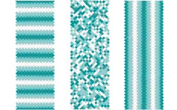

| < |
 |
For FolksIs a single photon a wave or a particle? Many people have struggled with the answer, I struggle with the question. The center panel is incoherent light. The photons are distributed randomly. The left panel is temporally coherent light. The photons are organized in rows in time. The right panel is spatially coherent light. The photons make columns in space. Each panel is composed of the same set of individual turquoise squares. The difference between the panels is only apparent by looking over a collection of squares. Only the left and right panels have particle and wave properties. They actually look like waves, as long as a wide enough area is viewed. Is a group of coherent photons a wave or a particle? The answer is both.
|
For NerdsIs a photon coherent? This question is poorly formed, cannot be answered, just like "What does two plus equal?" Only for collections of photons can we ask if the many photons are coherent. Is a photon a wave or a particle? This question is poorly formed, it cannot be answered. Only for a collection of photons can we ask if the many photons have properties of waves and particles. For many photons that happen to be coherent, the answer is yes, the collection of many photons behaves like particles and waves. |